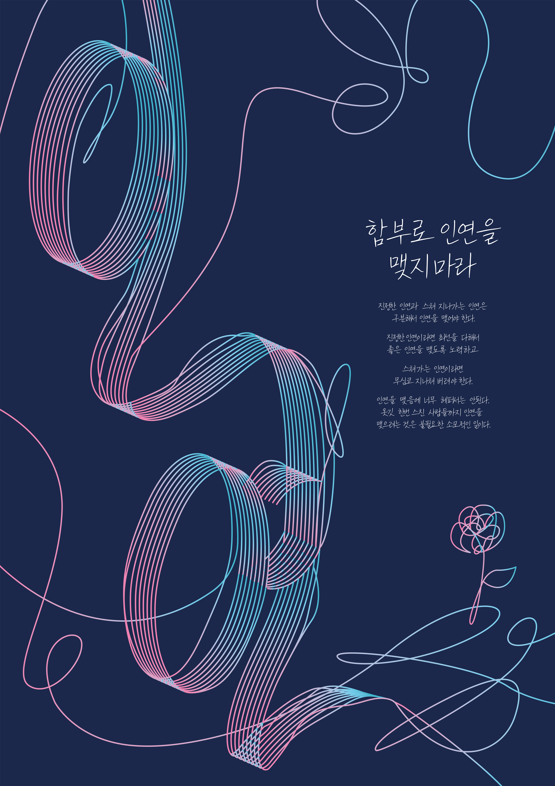
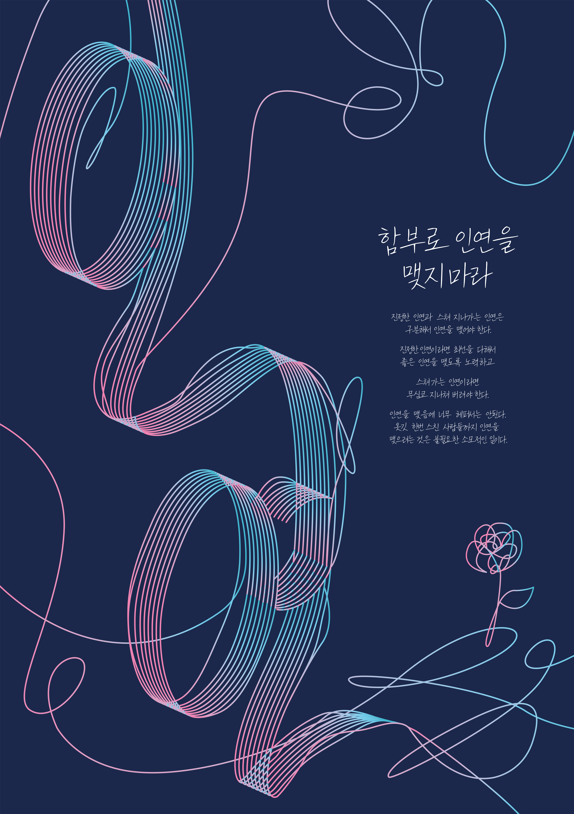

Poster Design
다양한 컨셉과 주제의 포스터들을 제작하였습니다.
인연 이야기 타이포 포스터
법정 스님의 '인연 이야기' 제목을 주제로 제작한 타이포 포스터입니다.
복잡하게 얽히고설킨 인연의 실을 표현하기 위해 선 요소를 이용하여 타이포 포스터를 제작하였습니다. 복잡하지만 아름다운 인연을 꽃 한송이로 나타냈습니다.
다양한 컨셉과 주제의 포스터들을 제작하였습니다.
법정 스님의 '인연 이야기' 제목을 주제로 제작한 타이포 포스터입니다.
복잡하게 얽히고설킨 인연의 실을 표현하기 위해 선 요소를 이용하여 타이포 포스터를 제작하였습니다. 복잡하지만 아름다운 인연을 꽃 한송이로 나타냈습니다.